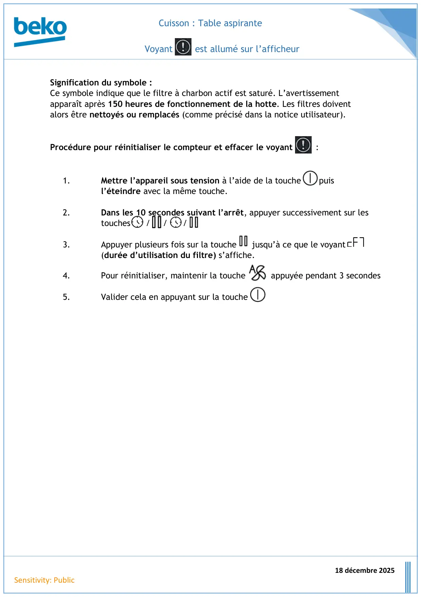

TableAspirante Voyant ! Allumé

Cuisson : Table aspiranteVoyant est allumé sur l’afficheur18 décembre 2025Sensitivity: PublicSignification du symbole :Ce symbole indique que le filtre à charbon actif est saturé. L’avertissementapparaît après 150 heures de fonctionnement de la hotte. Les filtres doiventalors être nettoyés ou remplacés (comme précisé dans la notice utilisateur).Procédure pour réinitialiser le compteur et effacer le voyant :1.Mettre l’appareil sous tension à l’aide de la touche puisl’éteindre avec la même touche.2.Dans les 10 secondes suivant l’arrêt, appuyer successivement sur lestouches / / /3.Appuyer plusieurs fois sur la touche jusqu’à ce que le voyant(durée d’utilisation du filtre) s’affiche.4.Pour réinitialiser, maintenir la touche appuyée pendant 3 secondes5.Valider cela en appuyant sur la touche
1 / 1